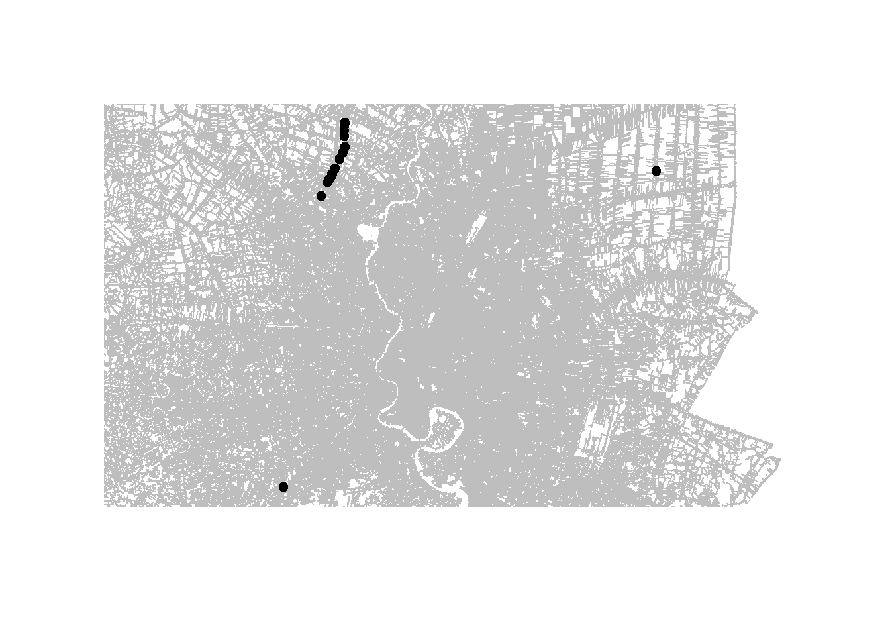

pacman::p_load(tidyverse, sf, lubridate, spNetwork)Take-home Exercise 1 - Technical Report
Overview
This is Technical Report of Take-home Exercise 1, aiming to examine the spatial patterns of road traffic accidents in the Bangkok Greater Metropolitan Area (BGMA) in 2022. Dataset from Kaggle Thailand Road Accident 2019-2022 is used. Administrative boundary data and road network data will also be incorporated to support spatial and network-constrained analyses.
The analysis consists of four main tasks:
Data Preparation and Quality Assessment: Clean and validate the accident records, define the study area, handle missing or invalid coordinates, and prepare the spatial datasets for analysis.
Exploratory and First-Order Analysis: Examine the spatial and temporal distribution of accidents and identify areas or road segments with high accident intensity using methods such as Kernel Density Estimation (KDE) and Network Kernel Density Estimation (NKDE).
Second-Order Analysis – Investigate whether road accidents exhibit statistically significant spatial clustering, with particular attention to clustering along the road network.
Integration and Interpretation – Compare findings from conventional and network-constrained approaches and discuss their implications for road-safety planning and public-safety management.
Loading Necessary R Packages
1 Data Preparation
1.1 Data Import and Initial Quality Assessment
1.1.1 Data Import
th_accident_raw <- read_csv("take-home_ex1_data/thai_road_accident_2019_2022.csv")1.1.2 Restrict to 2022
accident_2022 <- th_accident_raw %>%
filter(year(incident_datetime) == 2022)1.1.3 Initial Data Screening
glimpse(accident_2022)Rows: 21,032
Columns: 18
$ acc_code <dbl> 6566872, 6566880, 5706553, 5485750, 562445…
$ incident_datetime <dttm> 2022-01-01 00:01:00, 2022-01-01 00:01:00,…
$ report_datetime <dttm> 2022-01-02 11:45:00, 2022-01-02 11:44:00,…
$ province_th <chr> "ชัยนาท", "มหาสารคาม", "ชุมพร", "ภูเก็ต", "อุดร…
$ province_en <chr> "Chai Nat", "Maha Sarakham", "Chumphon", "…
$ agency <chr> "department of rural roads", "department o…
$ route <chr> "เทศบาลตำบลวัดสิงห์ - บ้านน้ำพุ (ช่วงหันคา)", "แยกทา…
$ vehicle_type <chr> "motorcycle", "motorcycle", "private/passe…
$ presumed_cause <chr> "driving under the influence of alcohol", …
$ accident_type <chr> "other", "other", "rollover/fallen on stra…
$ number_of_vehicles_involved <dbl> 1, 1, 1, 1, 1, 1, 1, 1, 2, 3, 1, 1, 2, 1, …
$ number_of_fatalities <dbl> 0, 0, 1, 0, 0, 1, 0, 0, 0, 0, 0, 0, 0, 0, …
$ number_of_injuries <dbl> 1, 1, 0, 1, 2, 0, 1, 1, 2, 1, 1, 1, 1, 1, …
$ weather_condition <chr> "clear", "dark", "clear", "clear", "clear"…
$ latitude <dbl> 15.113158, 16.489238, 10.625082, 7.934514,…
$ longitude <dbl> 99.98124, 103.07762, 99.17715, 98.27715, 1…
$ road_description <chr> "straight road", "straight road", "straigh…
$ slope_description <chr> "no slope", "no slope", "no slope", "no sl…summary(accident_2022) acc_code incident_datetime report_datetime
Min. :5478917 Min. :2022-01-01 00:01:00 Min. :2022-01-01 09:21:00
1st Qu.:6288805 1st Qu.:2022-03-30 07:17:30 1st Qu.:2022-05-24 08:56:45
Median :6911501 Median :2022-06-20 07:27:30 Median :2022-09-09 08:54:00
Mean :6855258 Mean :2022-06-26 12:08:51 Mean :2022-08-29 00:06:59
3rd Qu.:7476661 3rd Qu.:2022-09-30 13:54:45 3rd Qu.:2022-12-21 09:37:30
Max. :7571316 Max. :2022-12-31 23:55:00 Max. :2023-01-26 13:20:00
province_th province_en agency route
Length :21032 Length :21032 Length :21032 Length :21032
N.unique : 78 N.unique : 78 N.unique : 3 N.unique : 2275
N.blank : 0 N.blank : 0 N.blank : 0 N.blank : 0
Min.nchar: 3 Min.nchar: 3 Min.nchar: 22 Min.nchar: 7
Max.nchar: 15 Max.nchar: 24 Max.nchar: 32 Max.nchar: 101
vehicle_type presumed_cause accident_type
Length :21032 Length :21032 Length :21032
N.unique : 15 N.unique : 49 N.unique : 11
N.blank : 0 N.blank : 0 N.blank : 0
Min.nchar: 3 Min.nchar: 5 Min.nchar: 5
Max.nchar: 28 Max.nchar: 47 Max.nchar: 44
number_of_vehicles_involved number_of_fatalities number_of_injuries
Min. : 0.000 Min. : 0.0000 Min. : 0.0000
1st Qu.: 1.000 1st Qu.: 0.0000 1st Qu.: 0.0000
Median : 1.000 Median : 0.0000 Median : 0.0000
Mean : 1.529 Mean : 0.1262 Mean : 0.7688
3rd Qu.: 2.000 3rd Qu.: 0.0000 3rd Qu.: 1.0000
Max. :24.000 Max. :10.0000 Max. :49.0000
weather_condition latitude longitude road_description
Length :21032 Min. : 5.771 Min. : 97.87 Length :21032
N.unique : 6 1st Qu.:13.502 1st Qu.: 99.89 N.unique : 16
N.blank : 0 Median :14.373 Median :100.61 N.blank : 0
Min.nchar: 4 Mean :14.358 Mean :100.83 Min.nchar: 5
Max.nchar: 16 3rd Qu.:16.538 3rd Qu.:101.31 Max.nchar: 36
Max. :20.378 Max. :105.48
NAs :189 NAs :189
slope_description
Length :21032
N.unique : 3
N.blank : 0
Min.nchar: 5
Max.nchar: 10
::: :::
1.1.4 Missing Value Assessment
colSums(is.na(accident_2022)) acc_code incident_datetime
0 0
report_datetime province_th
0 0
province_en agency
0 0
route vehicle_type
0 0
presumed_cause accident_type
0 0
number_of_vehicles_involved number_of_fatalities
0 0
number_of_injuries weather_condition
0 0
latitude longitude
189 189
road_description slope_description
0 0 1.1.5 Duplicate Record Assessment
sum(duplicated(accident_2022))[1] 0accident_2022 %>%
count(acc_code) %>%
filter(n > 1)# A tibble: 0 × 2
# ℹ 2 variables: acc_code <dbl>, n <int>No duplicated accident identifiers or fully duplicated records were detected.
1.2 Study Area Definition
1.2.1 Define Bangkok Metropolitan Region (BMR)
[Insert source]
bmr_provinces <- c(
"Bangkok",
"Nakhon Pathom",
"Nonthaburi",
"Pathum Thani",
"Samut Prakan",
"Samut Sakhon")1.2.2 Select BMR Accident Records
accident_bmr <- accident_2022 %>%
filter(province_en %in% bmr_provinces)1.2.3 Prepare BMR Administrative Boundary
tha_adm1 <- st_read("take-home_ex1_data/geoBoundaries-THA-ADM1.geojson")Reading layer `geoBoundaries-THA-ADM1' from data source
`C:\Users\jiayi\Documents\SMU\26_Aug_Term\GAA\lw0170_GAA\ISSS626_course\take-home_exercise\take-home_ex1_data\geoBoundaries-THA-ADM1.geojson'
using driver `GeoJSON'
Simple feature collection with 77 features and 5 fields
Geometry type: MULTIPOLYGON
Dimension: XY
Bounding box: xmin: 97.34381 ymin: 5.612851 xmax: 105.6368 ymax: 20.46483
Geodetic CRS: WGS 84bmr_names <- c(
"Bangkok",
"Nakhon Pathom Province",
"Nonthaburi Province",
"Pathum Thani Province",
"Samut Prakan Province",
"Samut Sakhon Province")
bmr_adm1 <- tha_adm1 %>%
filter(shapeName %in% bmr_names)1.2.4 Construct BMR Study Boundary
bmr_boundary <- bmr_adm1 %>%
summarise()::: :::
1.3 Event and Attribute Preparation
1.3.1 Define accident events
A point event represents one recorded road traffic accident occurring within the Bangkok Metropolitan Region during 2022. Each unique acc_code is treated as one event. Multiple accidents occurring at the same recorded coordinates are retained as separate events because they represent distinct accident incidents.
1.3.2 Derive Temporal Attributes
accident_bmr <- accident_bmr %>%
mutate(
month = month(incident_datetime, label = TRUE),
weekday = wday(incident_datetime, label = TRUE),
hour = hour(incident_datetime))1.3.3 Derive Accident Severity
accident_bmr <- accident_bmr %>%
mutate(
severity = case_when(
is.na(number_of_fatalities) | is.na(number_of_injuries) ~ "Unknown",
number_of_fatalities > 0 ~ "Fatal",
number_of_injuries > 0 ~ "Injury",
TRUE ~ "Non-injury"))1.4 Geospatial Data Preparation
1.4.1 Coordinate Completeness and Plausibility
missing_coord <- accident_bmr %>%
filter(is.na(latitude) | is.na(longitude))
nrow(missing_coord)[1] 189::: Records with missing coordinates were retained during the initial quality assessment but excluded from spatial point-pattern analysis because their locations could not be reliably represented spatially. :::
accident_bmr_clean <- accident_bmr %>%
filter(
!is.na(latitude),
!is.na(longitude))1.4.2 Convert Records to Spatial Point Features
accident_bmr_sf <- st_as_sf(
accident_bmr_clean,
coords = c("longitude", "latitude"),
crs = 4326,
remove = FALSE)1.4.3 Spatial Validation Against BMR Boundary
accident_bmr_sf <- st_filter(
accident_bmr_sf,
bmr_boundary)1.4.4 CRS Transformation
accident_bmr_utm <- st_transform(
accident_bmr_sf,
32647)
bmr_boundary_utm <- st_transform(
bmr_boundary,
32647)1.5 Road Network Preparation
The road network represents an OpenStreetMap snapshot near the end of the 2022 study period; therefore, minor changes to the network during 2022 may not be fully represented.(https://download.geofabrik.de/asia/thailand.html)
1.5.1 Import and Inspect Road Network
roads_th <- st_read("take-home_ex1_data/th_road/gis_osm_roads_free_1.shp")Reading layer `gis_osm_roads_free_1' from data source
`C:\Users\jiayi\Documents\SMU\26_Aug_Term\GAA\lw0170_GAA\ISSS626_course\take-home_exercise\take-home_ex1_data\th_road\gis_osm_roads_free_1.shp'
using driver `ESRI Shapefile'
Simple feature collection with 2930836 features and 10 fields
Geometry type: LINESTRING
Dimension: XY
Bounding box: xmin: 97.31354 ymin: 5.643645 xmax: 105.6481 ymax: 20.47168
Geodetic CRS: WGS 84roads_thSimple feature collection with 2930836 features and 10 fields
Geometry type: LINESTRING
Dimension: XY
Bounding box: xmin: 97.31354 ymin: 5.643645 xmax: 105.6481 ymax: 20.47168
Geodetic CRS: WGS 84
First 10 features:
osm_id code fclass name ref oneway maxspeed layer
1 4270622 5122 residential ถนนศิริมังคลาจารย์ ซอย1 <NA> B 0 0
2 4828442 5122 residential Soi Ruam- U-Thit <NA> B 0 0
3 4828443 5122 residential Soi Ruam- U-Thit <NA> B 0 0
4 4828444 5122 residential <NA> <NA> B 0 0
5 4828446 5122 residential <NA> <NA> B 0 0
6 8560735 5122 residential ซอยโรงเรียนจารุณีวิทย์ <NA> B 30 0
7 8560761 5122 residential ซอยโรงเรียนกิ่งเพชร <NA> F 30 0
8 8560767 5122 residential ซอยเพชรบุรี 5 <NA> B 0 0
9 8560771 5122 residential ซอยเพชรบุรี 12 <NA> F 0 0
10 8560776 5153 footway <NA> <NA> B 0 0
bridge tunnel geometry
1 F F LINESTRING (98.97274 18.796...
2 F F LINESTRING (98.34197 7.8194...
3 F F LINESTRING (98.34053 7.8202...
4 F F LINESTRING (98.34256 7.8210...
5 F F LINESTRING (98.34197 7.8194...
6 F F LINESTRING (100.5263 13.753...
7 F F LINESTRING (100.5257 13.751...
8 F F LINESTRING (100.5252 13.758...
9 F F LINESTRING (100.5299 13.753...
10 F F LINESTRING (100.521 13.7563...st_crs(roads_th)Coordinate Reference System:
User input: WGS 84
wkt:
GEOGCRS["WGS 84",
DATUM["World Geodetic System 1984",
ELLIPSOID["WGS 84",6378137,298.257223563,
LENGTHUNIT["metre",1]]],
PRIMEM["Greenwich",0,
ANGLEUNIT["degree",0.0174532925199433]],
CS[ellipsoidal,2],
AXIS["latitude",north,
ORDER[1],
ANGLEUNIT["degree",0.0174532925199433]],
AXIS["longitude",east,
ORDER[2],
ANGLEUNIT["degree",0.0174532925199433]],
ID["EPSG",4326]]unique(st_geometry_type(roads_th))[1] LINESTRING
18 Levels: GEOMETRY POINT LINESTRING POLYGON MULTIPOINT ... TRIANGLEunique(roads_th$fclass) [1] "residential" "footway" "secondary" "motorway"
[5] "primary" "motorway_link" "primary_link" "trunk"
[9] "unclassified" "tertiary" "secondary_link" "trunk_link"
[13] "service" "cycleway" "tertiary_link" "path"
[17] "track" "steps" "track_grade4" "track_grade2"
[21] "living_street" "track_grade3" "pedestrian" "track_grade1"
[25] "track_grade5" "busway" "bridleway" "unknown" 1.5.2 Select Relevant Road Classes
motor_road_classes <- c(
"motorway",
"motorway_link",
"trunk",
"trunk_link",
"primary",
"primary_link",
"secondary",
"secondary_link",
"tertiary",
"tertiary_link",
"unclassified",
"residential",
"living_street",
"service")
roads_motor <- roads_th %>%
filter(fclass %in% motor_road_classes)
roads_motor %>%
st_drop_geometry() %>%
count(fclass, sort = TRUE) fclass n
1 residential 1357946
2 service 934108
3 unclassified 117254
4 tertiary 39161
5 secondary 32115
6 trunk 20375
7 primary 19955
8 trunk_link 10638
9 primary_link 8201
10 secondary_link 6702
11 motorway 2671
12 motorway_link 2380
13 tertiary_link 1615
14 living_street 251.5.3 Restrict Road Network to BMR
st_crs(roads_motor)Coordinate Reference System:
User input: WGS 84
wkt:
GEOGCRS["WGS 84",
DATUM["World Geodetic System 1984",
ELLIPSOID["WGS 84",6378137,298.257223563,
LENGTHUNIT["metre",1]]],
PRIMEM["Greenwich",0,
ANGLEUNIT["degree",0.0174532925199433]],
CS[ellipsoidal,2],
AXIS["latitude",north,
ORDER[1],
ANGLEUNIT["degree",0.0174532925199433]],
AXIS["longitude",east,
ORDER[2],
ANGLEUNIT["degree",0.0174532925199433]],
ID["EPSG",4326]]st_crs(bmr_boundary)Coordinate Reference System:
User input: WGS 84
wkt:
GEOGCRS["WGS 84",
DATUM["World Geodetic System 1984",
ELLIPSOID["WGS 84",6378137,298.257223563,
LENGTHUNIT["metre",1]]],
PRIMEM["Greenwich",0,
ANGLEUNIT["degree",0.0174532925199433]],
CS[ellipsoidal,2],
AXIS["geodetic latitude (Lat)",north,
ORDER[1],
ANGLEUNIT["degree",0.0174532925199433]],
AXIS["geodetic longitude (Lon)",east,
ORDER[2],
ANGLEUNIT["degree",0.0174532925199433]],
ID["EPSG",4326]]st_crs(roads_motor) == st_crs(bmr_boundary)[1] TRUEroads_bmr <- st_filter(
roads_motor,
bmr_boundary)
nrow(roads_bmr)[1] 576872roads_bmr %>%
st_drop_geometry() %>%
count(fclass, sort = TRUE) fclass n
1 residential 276993
2 service 263244
3 secondary 7340
4 unclassified 7222
5 primary 6270
6 tertiary 5727
7 primary_link 2452
8 secondary_link 2073
9 motorway_link 1720
10 trunk 1464
11 motorway 1268
12 trunk_link 668
13 tertiary_link 425
14 living_street 61.5.4 Clip Network to BMR Boundary
roads_bmr <- st_intersection(
roads_bmr,
bmr_boundary)1.5.5 Network Geometry Preparation and Validation
roads_bmr <- roads_bmr %>%
st_cast("LINESTRING")
unique(st_geometry_type(roads_bmr))[1] LINESTRING
18 Levels: GEOMETRY POINT LINESTRING POLYGON MULTIPOINT ... TRIANGLEtable(st_is_valid(roads_bmr))
TRUE
577626 nrow(roads_bmr)[1] 577626roads_bmr <- roads_bmr %>%
mutate(LineID = row_number())
anyDuplicated(roads_bmr$LineID)[1] 0roads_bmr_utm <- st_transform(
roads_bmr,
32647)1.6 Point-to-Network Validation and Snapping
1.6.1 Point-to-Network Distance Assessment
nearest_road_id <- st_nearest_feature(
accident_bmr_utm,
roads_bmr_utm)
nearest_road_dist <- st_distance(
accident_bmr_utm,
roads_bmr_utm[nearest_road_id, ],
by_element = TRUE)accident_bmr_utm$dist_to_road_m <-
as.numeric(nearest_road_dist)
summary(accident_bmr_utm$dist_to_road_m) Min. 1st Qu. Median Mean 3rd Qu. Max.
0.000601 1.851901 3.845640 4.569081 6.599110 41.534161 quantile(
accident_bmr_utm$dist_to_road_m,
probs = c(
0,
0.25,
0.5,
0.75,
0.90,
0.95,
0.99,
1),
na.rm = TRUE) 0% 25% 50% 75% 90% 95%
6.012547e-04 1.851901e+00 3.845640e+00 6.599110e+00 9.240770e+00 1.057616e+01
99% 100%
1.395806e+01 4.153416e+01 accident_bmr_utm %>%
st_drop_geometry() %>%
summarise(
total = n(),
over_10m = sum(dist_to_road_m > 10),
over_20m = sum(dist_to_road_m > 20),
over_30m = sum(dist_to_road_m > 30),
over_50m = sum(dist_to_road_m > 50))# A tibble: 1 × 5
total over_10m over_20m over_30m over_50m
<int> <int> <int> <int> <int>
1 3589 233 19 1 0::: Point-to-Network Validation Before conducting network-constrained spatial analysis, the distance from each accident point to its nearest road segment was calculated to assess positional consistency. The median distance was approximately 3.85 m, while 95% and 99% of accident locations were within approximately 10.58 m and 13.96 m of the nearest road, respectively. The maximum observed distance was approximately 41.53 m. These results suggest that the accident locations were generally well aligned with the road network. A maximum snapping tolerance of 50 m was therefore considered appropriate for projecting accident points onto the road network. :::
1.6.2 Examine Potentially Misaligned Events
far_accidents <- accident_bmr_utm %>%
filter(dist_to_road_m > 20)
far_accidents %>%
st_drop_geometry() %>%
select(
acc_code,
latitude,
longitude,
dist_to_road_m,
route,
road_description) %>%
arrange(desc(dist_to_road_m))# A tibble: 19 × 6
acc_code latitude longitude dist_to_road_m route road_description
<dbl> <dbl> <dbl> <dbl> <chr> <chr>
1 7212324 14.0 101. 41.5 แยกทางหลวงหมายเล… straight road
2 6252745 14.0 100. 27.2 คลองบางหลวง - ต่า… straight road
3 6362572 14.0 100. 26.4 คลองบางไผ่ - คลอง… straight road
4 6233643 14.0 100. 26.3 คลองบางไผ่ - คลอง… straight road
5 7561795 14.0 100. 26.1 คลองบางไผ่ - คลอง… straight road
6 7565239 13.6 100. 25.4 ดาวคะนอง - แสมดำ other
7 7561793 14.0 100. 25.3 คลองบางไผ่ - คลอง… straight road
8 6513957 14.0 100. 25.2 คลองบางไผ่ - คลอง… straight road
9 7565191 14.0 100. 25.1 คลองบางไผ่ - คลอง… straight road
10 6242101 14.0 100. 24.8 คลองบางไผ่ - คลอง… straight road
11 7512256 14.0 100. 24.8 ไม่ทราบ straight road
12 6591417 14.0 100. 24.6 คลองบางไผ่ - คลอง… straight road
13 5843213 14.0 100. 23.9 คลองบางไผ่ - คลอง… straight road
14 7541169 14.0 100. 23.6 คลองบางไผ่ - คลอง… straight road
15 6981795 14.0 100. 23.3 คลองบางหลวง - ต่า… other
16 7565032 14.0 100. 23.1 คลองบางหลวง - ต่า… wide curve
17 6466764 14.0 100. 22.0 คลองบางไผ่ - คลอง… straight road
18 7117128 14.0 100. 21.6 คลองบางไผ่ - คลอง… straight road
19 7441189 14.0 100. 20.6 ไม่ทราบ straight road far_nearest_id <- st_nearest_feature(
far_accidents,
roads_bmr_utm)
nearest_lines <- st_nearest_points(
far_accidents,
roads_bmr_utm[far_nearest_id, ],
pairwise = TRUE)
far_area <- st_bbox(
st_buffer(
st_union(far_accidents),
dist = 500))
plot(
st_geometry(roads_bmr_utm),
xlim = c(far_area["xmin"], far_area["xmax"]),
ylim = c(far_area["ymin"], far_area["ymax"]),
col = "grey")
plot(
nearest_lines,
add = TRUE,
lwd = 2)
plot(
st_geometry(far_accidents),
add = TRUE,
pch = 19)
::: Accident events located more than 20 m from their nearest road segment were visually inspected to identify potential spatial misalignment before network snapping. :::
1.6.3 Snap Accident Events to Road Network
accident_snapped <- snapPointsToLines2(
points = accident_bmr_utm,
lines = roads_bmr_utm,
idField = "LineID",
snap_dist = 50)1.6.4 Post-Snapping Validation
nrow(accident_bmr_utm)[1] 3589nrow(accident_snapped)[1] 3589unique(st_geometry_type(accident_snapped))[1] POINT
18 Levels: GEOMETRY POINT LINESTRING POLYGON MULTIPOINT ... TRIANGLEst_crs(accident_snapped) == st_crs(roads_bmr_utm)[1] TRUEsum(is.na(accident_snapped$nearest_line_id))[1] 0accident_snapped %>%
st_drop_geometry() %>%
select(acc_code, nearest_line_id) %>%
head() acc_code nearest_line_id
1 5652876 12351
2 5484851 260741
3 6566824 97053
4 5485786 10927
5 5493686 52671
6 6566830 17321check_road_id <- st_nearest_feature(
accident_snapped,
roads_bmr_utm)
check_distance <- st_distance(
accident_snapped,
roads_bmr_utm[check_road_id, ],
by_element = TRUE)
summary(as.numeric(check_distance)) Min. 1st Qu. Median Mean 3rd Qu. Max.
0.000e+00 2.017e-11 4.109e-11 4.549e-11 6.624e-11 1.263e-10 1.7 Store Analysis-Ready Data
analysis_ready <- list(
accidents = accident_snapped,
roads = roads_bmr_utm,
boundary = bmr_boundary_utm)
saveRDS(
analysis_ready,
"take-home_ex1_data/processed/analysis_ready.rds")